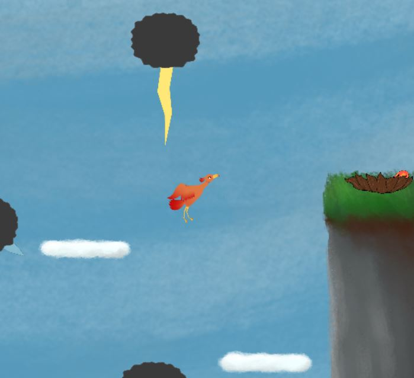

Flight of the Phoenix is a short platformer game for people of all ages. Take to the skies as a phoenix in search of its lost eggs. The journey will not be easy as there are many looming threats along the way. Dodge any threats you encounter and make it to the eggs! Good luck!
Simple controls allow the game to be played on mobile devices if desired, though we recommend playing in landscape mode if you do so. The main goal is to reach the Phoenix nest and save the egg, while avoiding obstacles like dangerous thunderclouds. Your phoenix is not perfect at flying, but has enough wing strength to flap while in the air, providing you two extra jumps once airborne. Mind the wind currents, though!
This was a final project between a handful of college students, so the game is fairly small. However, we wanted to share the gift of coding and web-design with others, so we posted our source code and assets on GitHub! If you'd like to view it, study it, or even download and modify it to make your own levels and mods, feel free! The goods are right here.